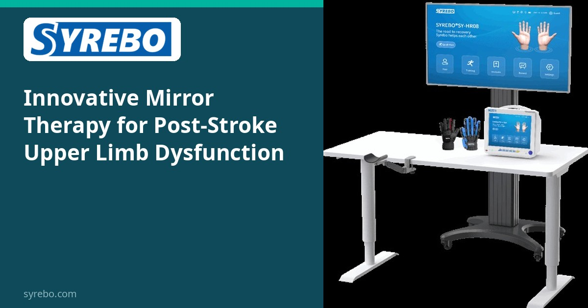
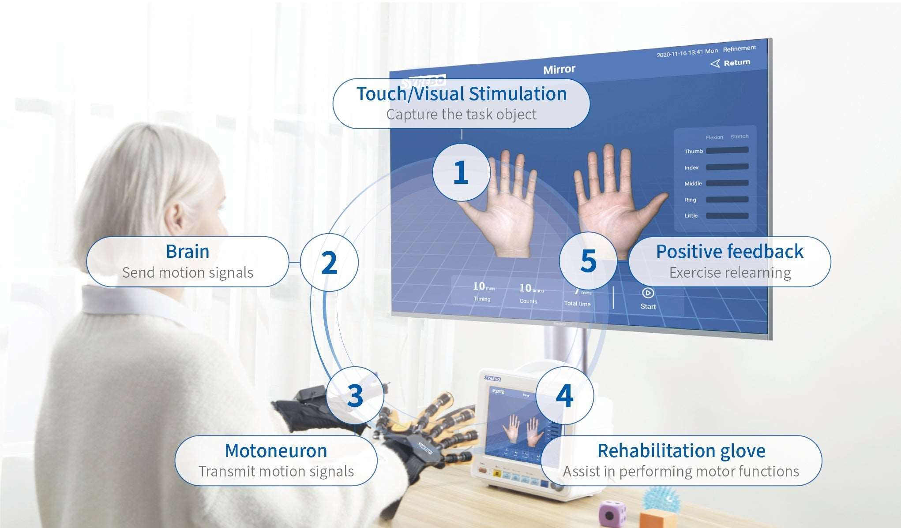

Syrebo rubrika kliničkih istraživanja
Čitanja temeljena na dokazima o robotskoj rehabilitaciji šake
Iz članka
创新式镜像疗法对脑卒中患者上肢功能障碍的康复效果
陈涛、刘沙鑫、陈雪莲、毛磊、李德波、干林玉
新医学, 2024, 55(6): 397-402
DOI: 10.3969/j.issn.0253-9802.2024.06.001


Uobičajena terapija ogledalom rabi zrcalo da sugerira kako se zahvaćena šaka miče. U inovativnoj inačici robotska rukavica pomaže zahvaćenoj šaci izvesti isti pokret koji izvodi nezahvaćena šaka, pa su opažanje i pokret povezani tijekom iste sesije. Godine 2024. New Medicine objavio je randomiziranu studiju Chena i kolega koja je dvije inačice usporedila u 60 osoba tijekom četiri tjedna. Članak izvještava o većim dobicima inovativne terapije ogledalom na pokretu gornjeg uda, pokretu zapešća i šake te odabranim dnevnim aktivnostima povezanim s gornjim udom.
Terapija ogledalom ima poznatu granicu: ako se zahvaćena šaka ne miče, vizualni prijedlog nema upareni motorički unos. Povezivanje potpomognute fleksije i ekstenzije sa zadatkom zrcala pokušaj je da zahvaćena strana stvarno dovrši pokret unutar opsega koji terapeut postavi.
Pojavljuje li se ta promjena na rezultatima, treba je ispitati naspram uobičajene terapije ogledalom, ne naspram nedjelanja. Šezdeset osoba, ravnomjerno podijeljenih, preliminarni je randomizirani opseg.
Rad identificira uređaj za rehabilitaciju šake korišten u istraživanju kao SY-HR08, proizveden u tvrtki iza marke Syrebo. Fotografija je ilustrativni prizor i nije potvrđeno da prikazuje istraživani uređaj. Yisheng je kineska marka tvrtke, a njezina međunarodna marka je Syrebo.
Dizajn studije
Raspodjela slučajnim brojevima. Inovativna terapija ogledalom, koja spaja zadatak zrcala s robotskom rukavicom, uspoređena je s uobičajenom terapijom ogledalom. Obje skupine također su primile uobičajenu rehabilitaciju prije odgovarajuće terapije ogledalom. Ishodi su uključivali FMA-UE, FMA-WH i pet stavki modificiranog Barthelova indeksa povezanih s gornjim udom.
Uzorak i raspored
Šezdeset osoba s oštećenjem gornjeg uda nakon moždanog udara, 30 u svakoj skupini, tijekom četiri tjedna.
Glavni nalazi
Članak izvještava o većem poboljšanju inovativne terapije ogledalom na FMA-UE, FMA-WH i odabranim stavkama modificiranog Barthelova indeksa. To je opis među skupinama ove studije. Srednje vrijednosti i P vrijednosti ne preračunavaju se na ovoj stranici. Te brojke ostaju u članku.
Pitanje je mijenja li dodavanje potpomognutog pokreta koji odgovara zrcalu rezultate u odnosu na uobičajenu terapiju ogledalom u proučavanim rehabilitacijskim programima. Šezdeset osoba daje preliminarni kontrast, ne dokaz programa za kuću.
Rad identificira istraživani uređaj kao SY-HR08. Razlika rezultata je kako je izvješteno u članku.
Ograničenja Trideset osoba po skupini. Razlike slijede članak. Srednje vrijednosti i P vrijednosti ovdje se ne preračunavaju. Model uređaja naveden je u radu. U radu je opisano 20 minuta uobičajene rehabilitacije nakon kojih slijedi 20 minuta terapije ogledalom, ali se na drugom mjestu navodi 40 minuta za svaku sesiju terapije ogledalom. Kriteriji uključivanja navode razdoblje od 1 do 6 mjeseci nakon moždanog udara, dok vrijednosti u danima u tablici 1 ne odgovaraju tom rasponu. Te podatke treba razjasniti.